CONHEÇA
Presidente do PT‑RJ, construiu sua trajetória na militância popular, na defesa de políticas públicas voltadas para inclusão, geração de renda e desenvolvimento social.
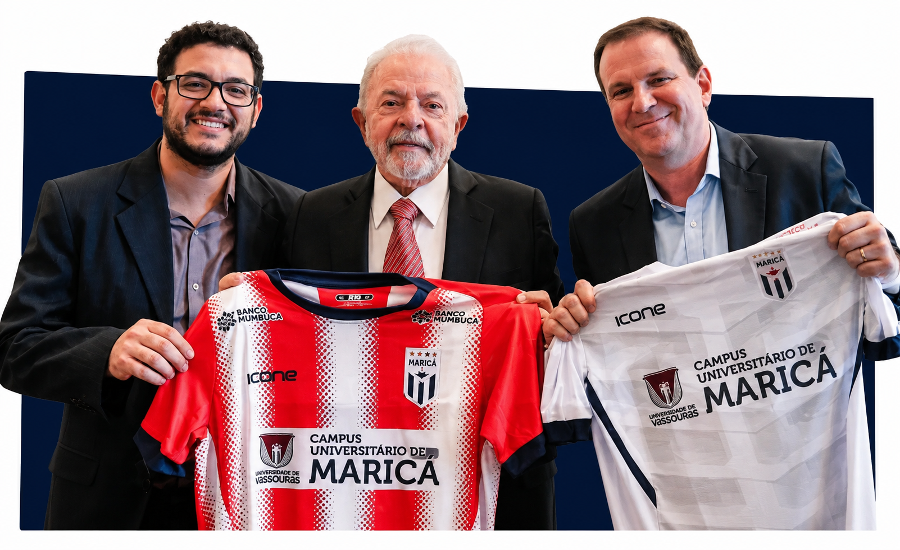
Diego Quaquá é presidente do PT-RJ e construiu sua trajetória na militância popular, na defesa de políticas públicas voltadas para inclusão, geração de renda e desenvolvimento social. Ao longo dos anos, atuou em diferentes funções públicas, como secretário de Economia Solidária em Maricá e no Rio de Janeiro, vice-prefeito de Maricá e secretário municipal de Habitação da capital durante o governo de Eduardo Paes.
Seu trabalho na gestão pública esteve voltado à criação de oportunidades para a população por meio da economia solidária, do empreendedorismo popular e de programas de desenvolvimento local, levando infraestrutura e obras de melhorias nas favelas. Em diferentes cargos, participou da formulação e execução de iniciativas voltadas à redução das desigualdades e ao fortalecimento da economia nos territórios.
Em Maricá, contribuiu para projetos que ajudaram a transformar o município em referência nacional em inovação social. Entre as áreas de destaque de sua atuação estão o apoio à agricultura familiar, às hortas comunitárias, à produção local e a mecanismos que estimulam a circulação de recursos dentro das próprias comunidades.
Seu trabalho está associado a iniciativas que ganharam reconhecimento pela capacidade de transformar vidas, como o fortalecimento do Banco Mumbuca, o programa Mumbuca Futuro, as Hortas Comunitárias e projetos de habitação e economia solidária. São ações que ajudaram a ampliar oportunidades e melhorar a qualidade de vida da população.
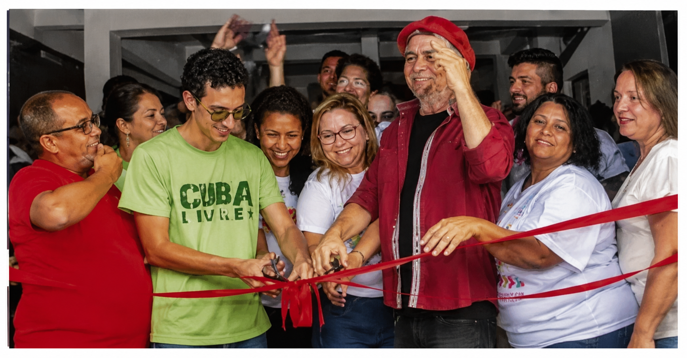
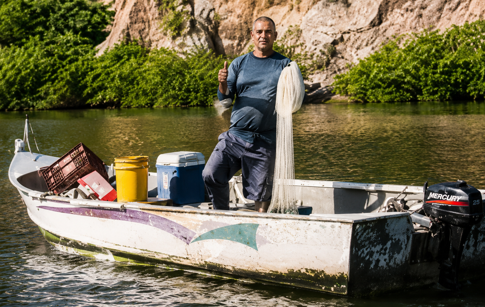
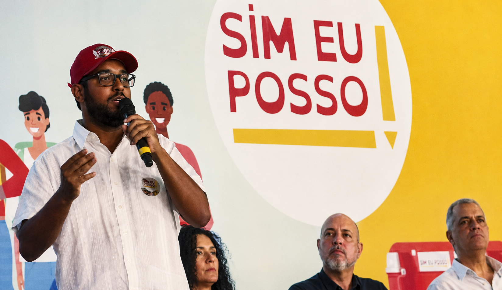
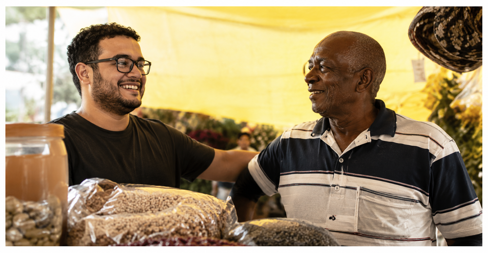
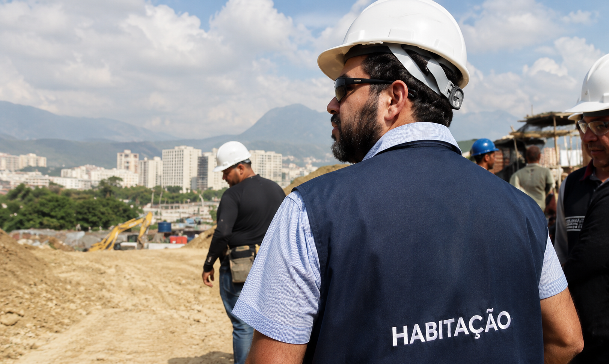
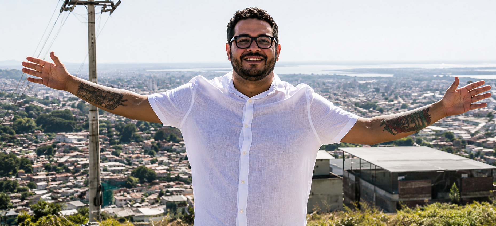
Desde o primeiro mandato de Washington Quaquá como prefeito de Maricá, a cidade passou por uma série de transformações que mudaram a realidade da população. Ao longo desse processo, Diego esteve ao lado de seu pai, acompanhando de perto cada avanço, aprendendo com as experiências bem-sucedidas e participando da construção de políticas públicas que transformam vidas.
+ Projetos que fizeram Maricá referência nacional!
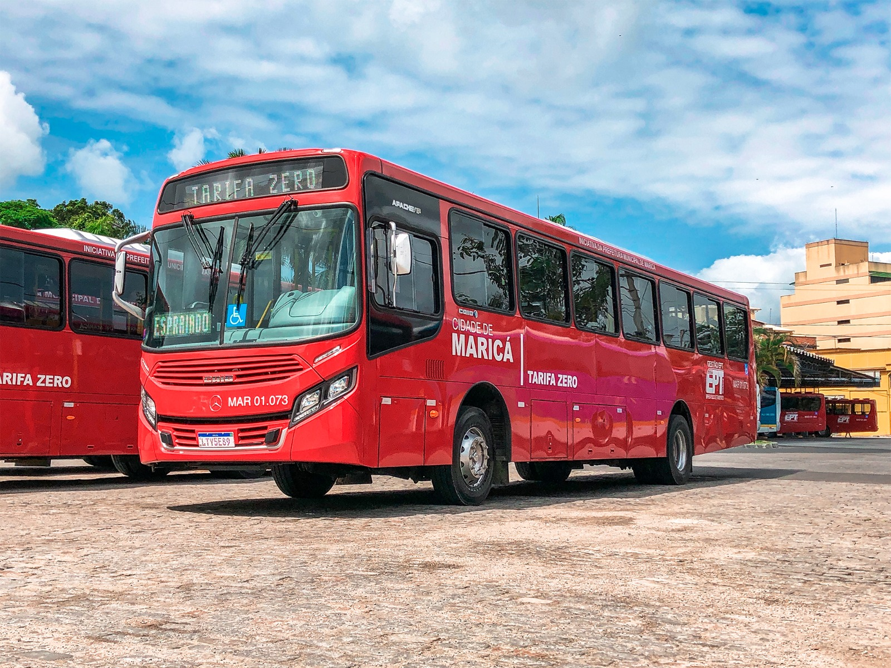
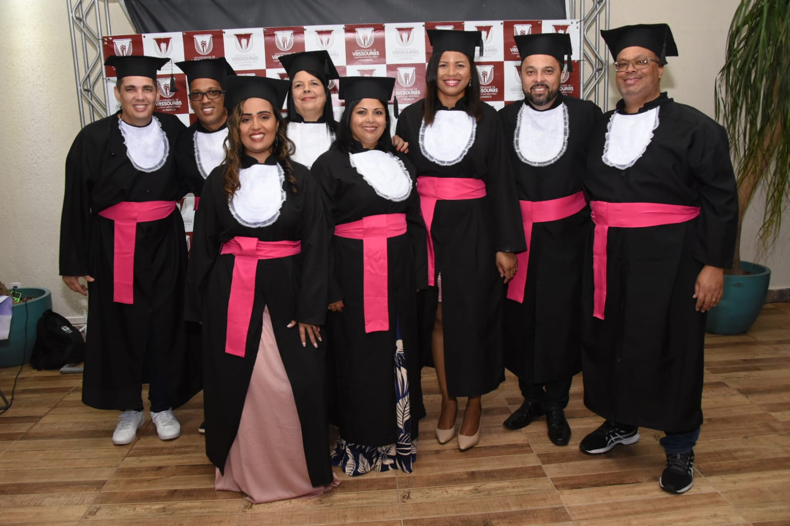
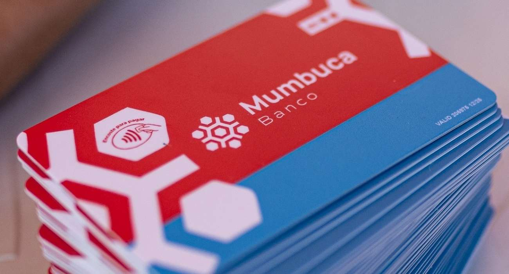
Diego é daqueles quadros que unem compromisso político, capacidade de gestão e sensibilidade. Ao longo da sua trajetória, ajudou a construir políticas públicas que mudaram a vida de milhares de pessoas, sempre com os pés no chão e ouvindo quem mais precisa. Seja na Economia Solidária, na Habitação ou no fortalecimento de programas que se tornaram referência, deixou sua marca com trabalho, dedicação e resultados concretos.
— Washington Quaquá, prefeito de Maricá
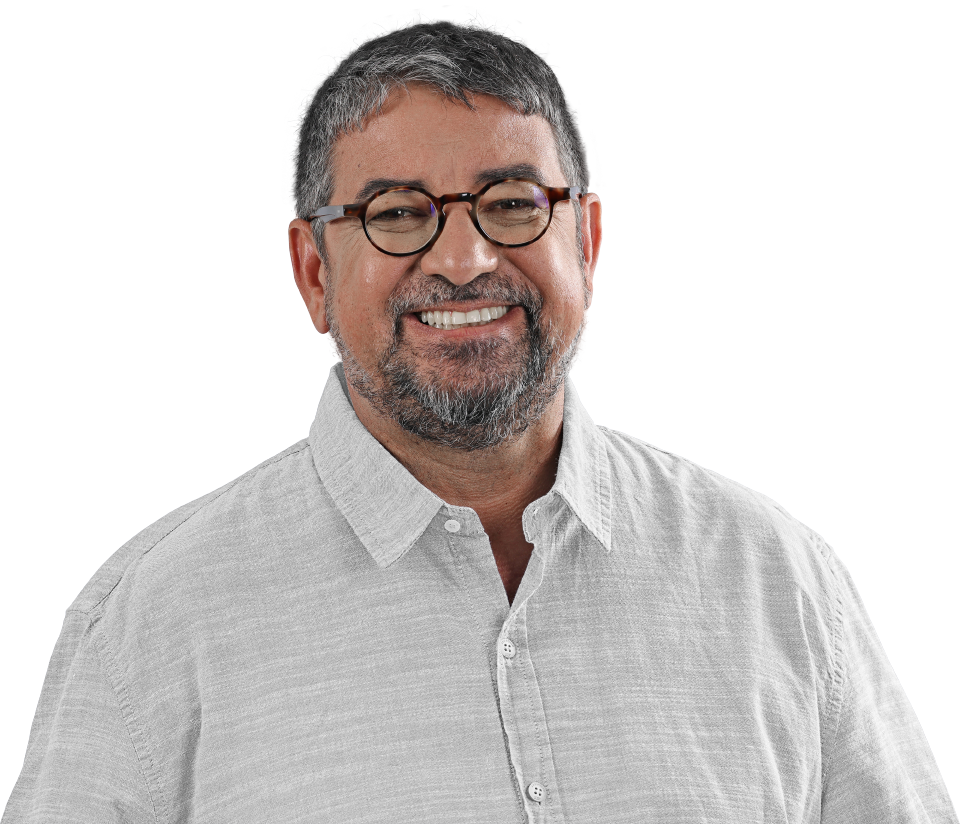